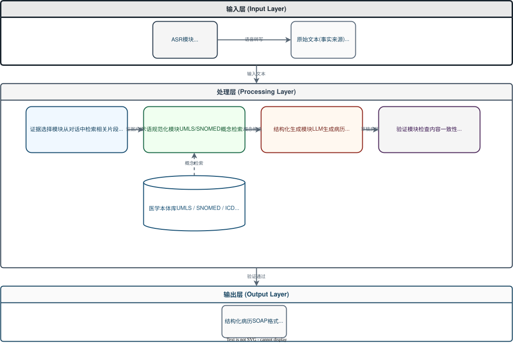

基于医患对话的智能问诊助手
汇报人：黎高和
汇报时间：2026年4月
项目阶段：ASR转写模块 + Web应用框架（已完成）
中文门诊录音到标准病历的完整系统研究相对分散，模块之间常分别优化，缺少围绕术语准确性的统一设计。 降幻觉研究多面向英文，针对中文门诊口语与录音转写误差的证据约束机制仍不充分。
| 模块 | 输入 | 输出 | 关键方法 |
|---|---|---|---|
| 医疗ASR | 门诊录音 | 带说话人标签的转写文本 | 医疗加权词表、置信度、n-best候选 |
| 术语纠错与标准化 | ASR文本与候选词 | 标准化医学术语序列 | 词典检索、拼音匹配、候选约束、实体链接 |
| 结构化病历生成 | 纠错后对话与病历模板 | 结构化病历 | 大模型抽取生成、章节约束、检索校验 |
| 错误检测与回写 | 初版病历与证据库 | 修正后病历与证据说明 | 错误检测、候选比对、事实校验 |

ASR技术发展迅速，需要能够快速切换引擎对比效果。工厂模式使得后续接入Whisper或Qwen3 ASR时， 只需实现接口并注册，无需修改业务代码。
| 对比维度 | FunASR | Qwen3 ASR | Whisper |
|---|---|---|---|
| 中文识别准确率 | AISHELL-1: 1.95% | AISHELL-2: 2.71% | zh WER: ~13.8% |
| 流程完整性 | VAD + 标点 + 热词 + 说话人分离 | 需自行集成 | 需自行集成 |
| 医疗适配能力 | 热词F1: 27→85 | 有限支持 | 有限支持 |
| 部署友好性 | ONNX + Int8量化 + CPU支持 | 较好 | CPU较慢 |
选择FunASR + Paraformer-large。原因不在于某项指标绝对最好，而是它在流程完整、医疗适配、 部署友好、上手门槛各方面都够用，放在一条路径上走得通。后续可通过工厂模式方便地切换其他引擎。
说话人分离已集成但未在真实数据验证；医疗纠错基于固定规则；尚未生成结构化病历； 没有在真实门诊数据上测试。这些都是后续改进方向。
欢迎批评指正